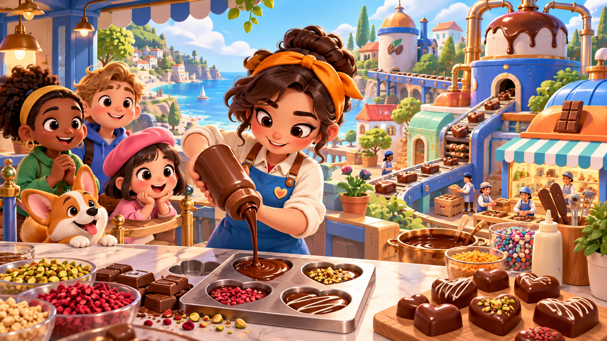

LEVEL 01 · OWN PROJECTMy independent hybrid casual game. I designed the customer-order loop, a short tutorial path and factory progression, then prototyped pouring, scoring and order flow.
VIEW PROJECT PAGE ↗OPEN QUEST LOG
Product decision
I chose customer orders as the main structure, kept the first three levels as a short tutorial, and focused the meta experience on one factory progression path.
The pouring interaction, scoring, order data and customer queue have been prototyped. The full order-to-delivery flow and visual assets are still in progress.
 REAL GAME
REAL GAME REAL GAME
REAL GAME